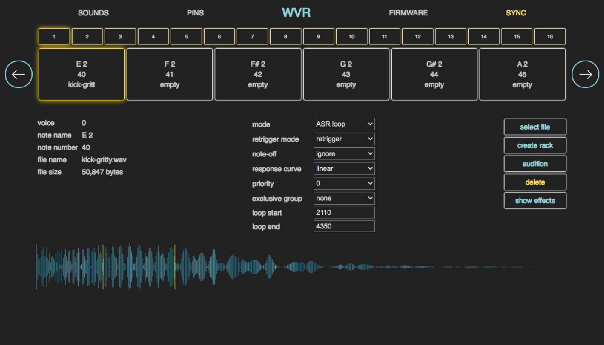
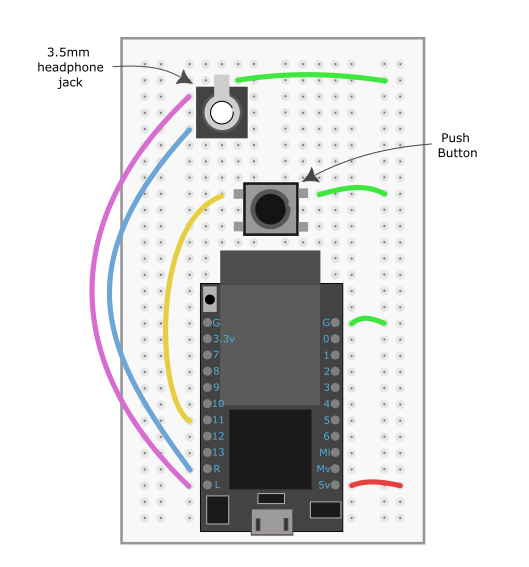
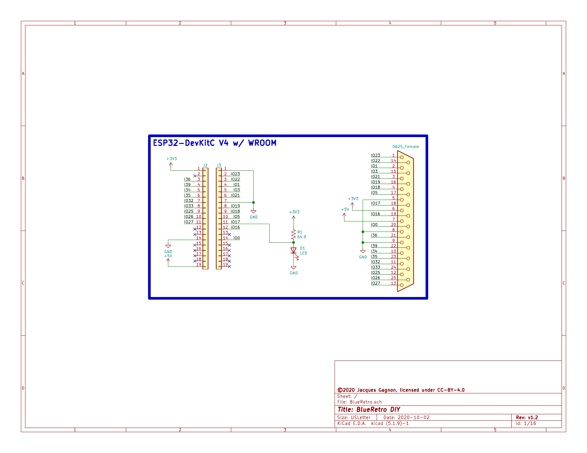
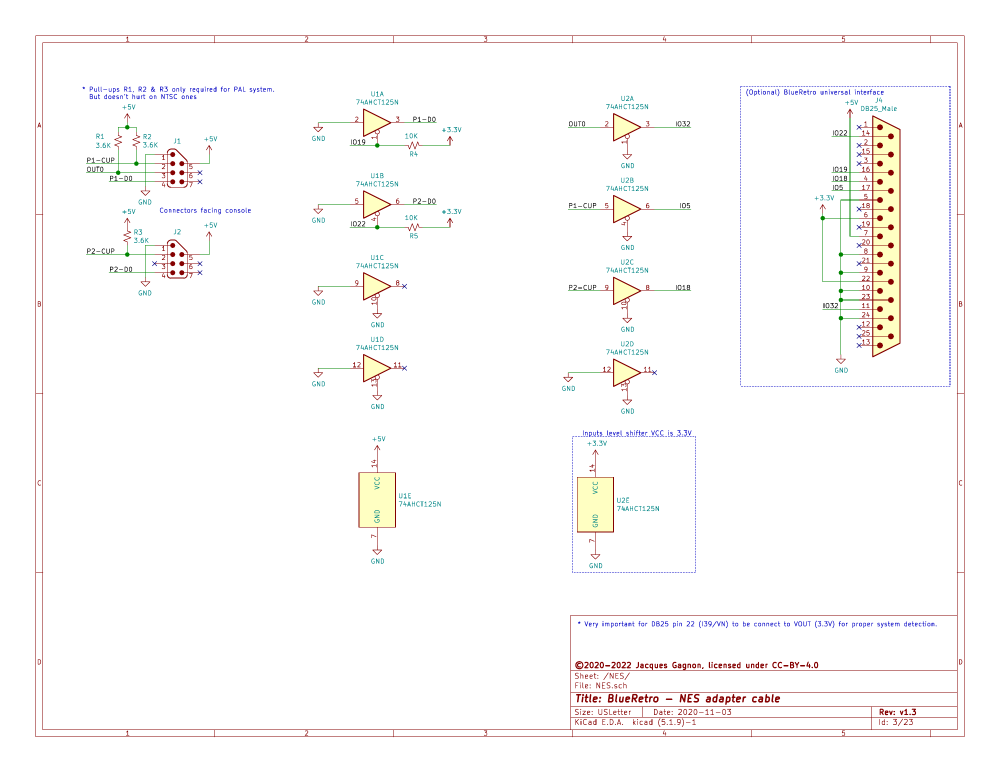
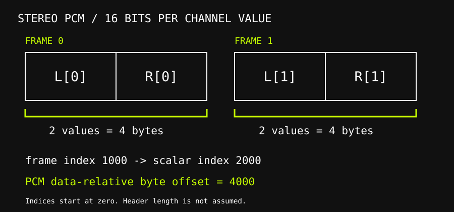
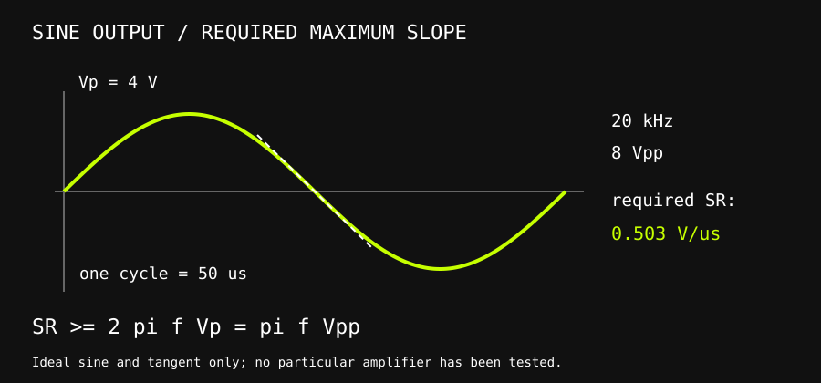
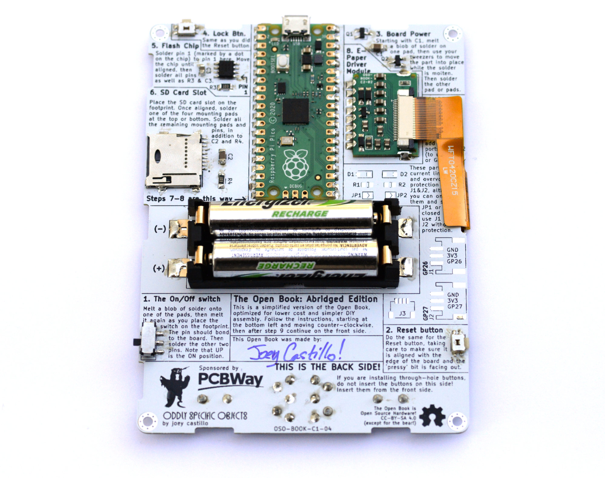
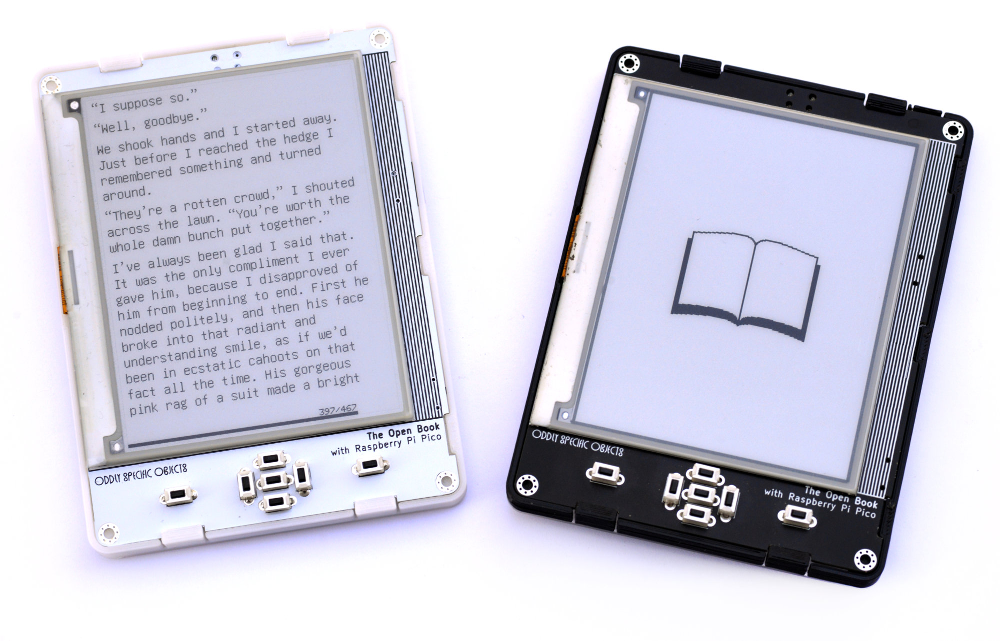
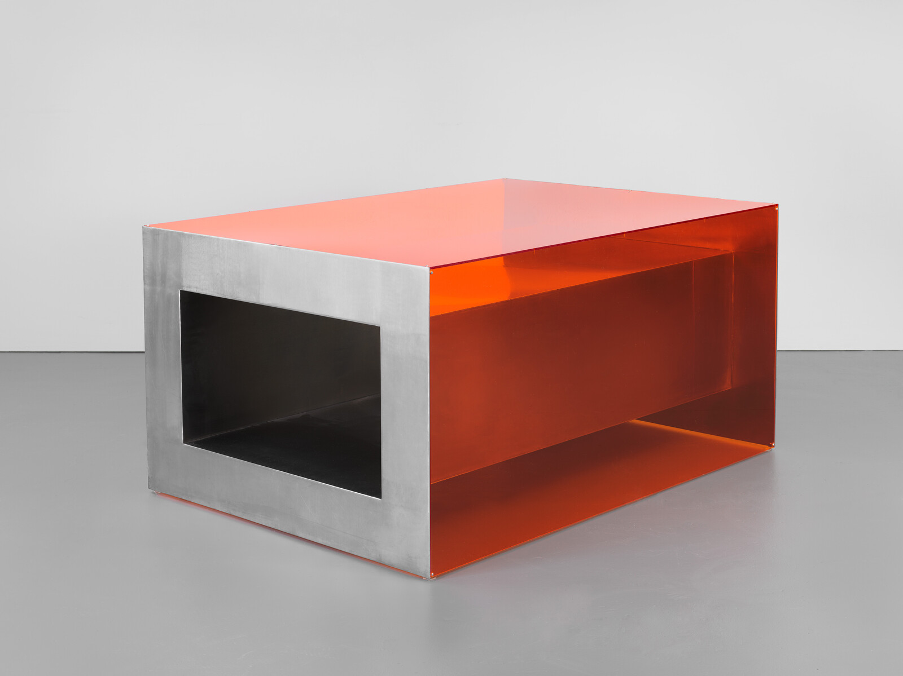

PROJECTS / TOOLS / KNOWLEDGE 配置一次动作， 按键如何触发样本，蓝牙输入怎样抵达旧主机，编辑器与库对象又替我们保留了什么。今天从两份开放工程展开，再看能带回自己项目的软件、数据单位与制作经验。
01 / AUDIO HARDWARE · WVR 一段音频如何变成 WVR 是基于 ESP32 的开源采样播放器。它把音频存储、引脚事件和 MIDI 映射放在同一个工程里，适合从“一个按钮播放一个声音”继续往下读。
项目列出 8 GB 音频存储，并用板上提供的网页界面管理声音、引脚和固件。浏览器负责准备与配置，板子负责响应事件、播放声音。这里的网页是原作者工具，本刊只分享资料和图解，不另做一个采样应用。

WVR 官方声音配置界面 / marchingband。图片展示作者软件，不是本刊连接设备后的截图。 同一个按钮，先决定它在发什么事件 官方入门例子把 D2 配给音符 E2，再设成下降沿触发：按下时把引脚拉低，才产生 Note On。引脚默认的 Edge 是 none；只选了音频文件，并不等于按钮已经完成配置。松开后的 Note Off 是否停止声音，也由对应音符的设置决定。
声音已经在播放，又收到一次触发时 模式 文档描述的结果 适合思考的用途 restart 从头开始 每次按下重新起音 ignore 忽略新触发 让已有片段完成 retrigger 新声部加入，旧声部继续 叠加同一段材料 note-off 新触发转为停止事件 用同一按键切换播放／停止
另一个有用的设置是 Exclusive Group：同组只允许一个音符发声。文档用开镲与闭镲举例，闭镲触发时切掉仍在响的开镲；这个关系比把所有声音都设成“重复叠加”更接近乐器的动作。Velocity Rack 则让不同力度选择不同样本，不只是缩放同一个样本的音量。

作者基础接线图 / WVR 项目。不同 WVR 板型的供电方式另查对应章节；此图不是本刊实装。 先对上引脚，再谈外部控制 WVR 的 D 编号不等于 ESP32 的 GPIO 编号。文档特别标出 D6 对应 GPIO0，会影响启动模式；D7–D10 仅输入且无内部上拉；D6、D13 的 ADC2 功能与 Wi-Fi 有资源冲突。给旋钮、按键分配引脚时，把这些条件写在接线草图旁，比从一个“空闲焊盘”开始更省返工。
继续探索：读 sounds、pins 和 hardware considerations 三段，再看一组你关心的行为——短音一次触发、长音按住播放，或者互斥的鼓组。先写出预期事件，再决定播放模式。
原作者完整使用文档 ↗ 硬件、引脚与接线图 ↗ 产品规格 ↗
02 / RETRO INTERFACES · 历史工程 旧主机加蓝牙， Jacques Gagnon 的 BlueRetro 用 ESP32 接收蓝牙手柄，把输入转换为旧主机所理解的控制器信号。原仓库已归档，适合当作开放接口工程阅读，不能当作仍在维护的新产品公告。
无线连接和主机线缆解决的是不同问题：前者接收手柄报告，后者要满足目标主机的协议、引脚与电气条件。项目将通用适配器与各系统的线缆图分开。DIY 文档指定 ESP32-DEVKITC-32E／ESP-WROOM-32；购买替代板之前，先核对具体模块与引脚，不只看名字里有没有 ESP32。

BlueRetro DIY，2020-10-02，v1.2 / © Jacques Gagnon，原图标题栏 CC BY 4.0。点击打开原 PDF。 DB25 在这里是项目定义的通用接线接口，不代表它采用电脑并口协议。将 GPIO 汇到同一连接器后，可以更换面向不同主机的外部线缆。读这种设计时，先沿端口号找网络名，再看网络接到输入、输出还是检测脚；连接器外形本身没有告诉你这些。
旧原图与具体器件，也要互相核对 
NES 线缆 v1.3 旧原图 / ©2020–2022 Jacques Gagnon，CC BY 4.0。输入缓冲器的供电标注需结合下文复核；本刊未验证此接线。 一个实际读图细节：NES 页把输入侧 U2 标为 74AHCT125N，同时将其 VCC 接到 3.3 V。以 TI 的 SN74AHCT125 为对照，推荐供电范围是 4.5–5.5 V。两处信息并不一致，所以不能把这个旧图解释为“任意 AHCT125 都是合适的 3.3 V 输入缓冲器”。
这不是对作者整机实测结果的判断；它说明，照旧图备料前仍要落到实际厂牌、完整料号和推荐工作条件。也不要自行把名字相近的 AHC、AHCT、LVC 系列互换。本期保留原图作为文献，学习入口是原协议和设计意图，供电与门限需按实际器件重新核对。
源码与归档说明 ↗ DIY 文档 ↗ 分主机线缆文档 ↗ TI SN74AHCT125 数据手册 ↗
07 / AUDIO DATA NOTE 这里的第 1000 个 sample， 讨论多声道 PCM 时，sample 可能指某个声道的一个数值，也可能被工具用来表示同一时刻的整帧。把循环点、数组索引和文件字节位置混在一起，位置就可能差一倍，或差上一个位深系数。

本刊原创数据布局示意：16 位、双声道、交错 PCM。编号从 0 开始，字节位置相对 data 区，不是整个 WAV 文件起点。 在这个特定格式里，每帧是 L[n], R[n] 两个 16 位数值，共 4 字节。第 1000 帧对应第 2000 个通道数值，距离 PCM 数据区起点 4000 字节。Microsoft 的 WAVEFORMATEX 用 nBlockAlign 表达这种完整数据块，PCM 时为声道数乘每声道位数再除以 8。
WAV 是 RIFF 分块文件，不能把所有文件都当成固定 44 字节头。读自己的工具文档时，先确认位置单位、声道布局和数据区位置，再做转换。WVR 的 ASR-loop 说明就特别提醒：不同 DAW 与单／双声道素材的计数方式可能不同，循环点不能盲目照抄。
Microsoft：WAVEFORMATEX ↗ RIFF 与音频数据块 ↗ WVR 循环位置说明 ↗
08 / ANALOG NOTE 频率相同，幅度变大， 压摆率描述输出电压能以多快的速度变化。对正弦信号 v(t)=Vₚ sin(2πft)，最大斜率出现在过零附近，是 2πfVₚ。它与“小信号能通过多少带宽”相关，但回答的不是同一个问题。

本刊原创理想正弦与切线。曲线是数学示意，不是某款运放的仿真或实测。 20 kHz、峰值 4 V（8 Vpp）的正弦，最大所需斜率约 0.503 V/μs；峰值降为 1 V，则约 0.126 V/μs。因此评估音频前端时，频率范围与输出幅度要一起写出，只写“20 kHz”还不足以表达这个需求。
这也不是达到上述 SR 数字就能保证失真足够低。闭环带宽、负载、输出摆幅与工作电源仍影响结果。TI 的 Ronald Michallick 还讨论了 slew boost：某些数据手册的压摆率依赖输入差分电压，不能把一个大信号指标当成所有条件下的常数。可继续对照器件手册中的大／小信号响应图，理解指标的适用条件。
SLOA332A，2023-07，修订于 2024-09。TI：Ramping Up on Slew Rate ↗
09 / MAKER EXPERIENCE · PICO ABRIDGED 回看 Open Book： Joey Castillo 的 Open Book Abridged 是早期 Pico 版本的开放阅读器，使用 AAA 电池。这里讨论的是这版公开工程，不与后来的 ESP32-S3 或 Open Book Touch 混为同一硬件。作者文档把小规模、可理解的手工装配作为明确目标。

Open Book Abridged 背面 / Joey Castillo，CC BY-SA 4.0。装配步骤、朝向和电路功能直接印在 PCB 上；图中商标保留。 主板保留较大封装与通孔按键，把电子纸驱动做成另一块邮票孔模块：主板可订裸 PCB，较密的驱动电路则交给 PCBA。这是一种分配制造难度的方法，而不是要求每位读者都手焊同样细密的焊盘。主板与驱动模块还是不同 EDA 来源，作者分别给出文件位置。
文档中另一项取舍是省去锂电充电电路，改用较厚的 AAA 方案；换来较低的器件数量和手装门槛。照片上的步骤编号、按钮安装面与极性说明，让装配时不必反复在屏幕与板子间找位置。对自己的 PCB，可以先选择最容易装反的一个位置，把提示放到真正会看到它的地方。

同版整机 / Joey Castillo。屏幕、实体导航与独立字体 Flash 分工，可继续沿作者文档阅读。 原作者结构、装配与使用文档 ↗ Pico 版工程与物料 ↗
10 / CULTURE · SCULPTURE 不锈钢与透明板， 
Donald Judd，《Untitled》，1968，不锈钢与有机玻璃，83.8 × 172.7 × 121.9 cm。Whitney，68.36a-b。© Judd Foundation / Artists Rights Society (ARS), New York。 DONALD JUDD / UNTITLED / 1968
看见的不只是外壳， STAINLESS STEEL · PLEXIGLASS · WHITNEY 68.36a-b
这件地面作品用不锈钢和琥珀色透明有机玻璃，形成开放与封闭体积之间的关系。与只能从外面猜测内部的封闭雕塑不同，透明面让内部空间进入视线，颜色又改变了看进去的方式。这是馆方对作品的核心说明。
可以沿金属面、透明面与空隙看一遍：哪些边缘让你确定物体的体积，哪些地方又让视线继续穿过？它的几何形状很少，但材料并没有变成中性的填充物。反射、透光与周围地面的关系，都参与了观看。馆藏页有作品尺寸与展览记录，适合接着看 Judd 怎样处理真实空间。
Whitney 原作与馆藏说明 ↗